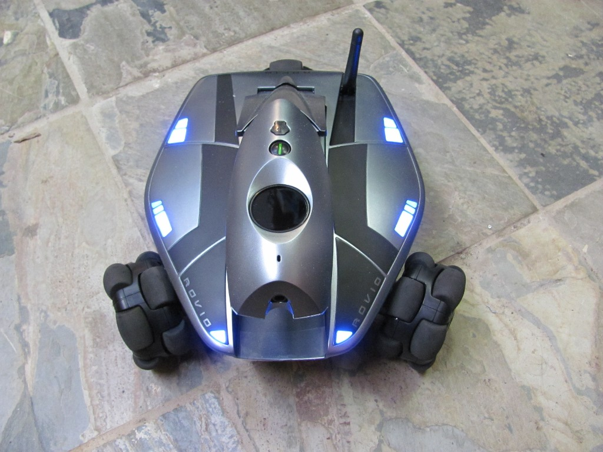

Rovio is one of the few robots that you can come across in your day-to-day life. It's an amazing product from the wowwee company targeted towards the commercial sector. Here is how it looks..

It's a $299 intelligent consumer device that aspires to be personal telepresence robot—enabling you to be in two places at once.
Essentially a Wi-Fi–enabled mobile webcam on wheels, the Rovio can be controlled from anywhere in the world through its Web-based
interface. You can control the VGA color camera, speaker, microphone, antenna, and "head," which can be raised and lowered.
The robot sits on three omnidirectional wheels, similar to those found on the somewhat-annoying Tribot,
which help it navigate easily around tricky furniture and sleeping pets. If only the user didn't need such healthy doses of
patience to help Rovio reach its full potential.
Here are some of the bright features of rovio which pulled me towards it for doing my final project.